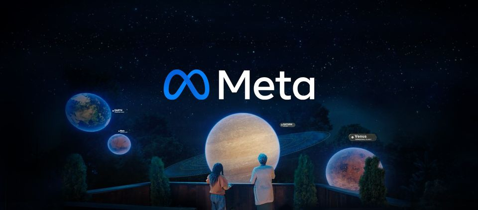

准确地说，元宇宙不是一个新的概念，它更像是一个经典概念的重生，是在扩展现实（XR）、区块链、云计算、数字孪生等新技术下的概念具化。
1992年，美国著名科幻大师尼尔·斯蒂芬森在其小说《雪崩》中这样描述元宇宙：“戴上耳机和目镜，找到连接终端，就能够以虚拟分身的方式进入由计算机模拟、与真实世界平行的虚拟空间。”
当然，核心概念缺乏公认的定义是前沿科技领域的一个普遍现象。元宇宙虽然备受各方关注和期待，但同样没有一个公认的定义。回归概念本质，可以认为元宇宙是在传统网络空间基础上，伴随多种数字技术成熟度的提升，构建形成的既映射于、又独立于现实世界的虚拟世界。同时，元宇宙并非一个简单的虚拟空间，而是把网络、硬件终端和用户囊括进一个永续的、广覆盖的虚拟现实系统之中，系统中既有现实世界的数字化复制物，也有虚拟世界的创造物。
当前，关于元宇宙的一切都还在争论中，从不同视角去分析会得到差异性极大的结论，但元宇宙所具有的基本特征则已得到业界的普遍认可。
其基本特征包括：沉浸式体验，低延迟和拟真感让用户具有身临其境的感官体验；虚拟化分身，现实世界的用户将在数字世界中拥有一个或多个ID身份；开放式创造，用户通过终端进入数字世界，可利用海量资源展开创造活动；强社交属性，现实社交关系链将在数字世界发生转移和重组；稳定化系统，具有安全、稳定、有序的经济运行系统。
